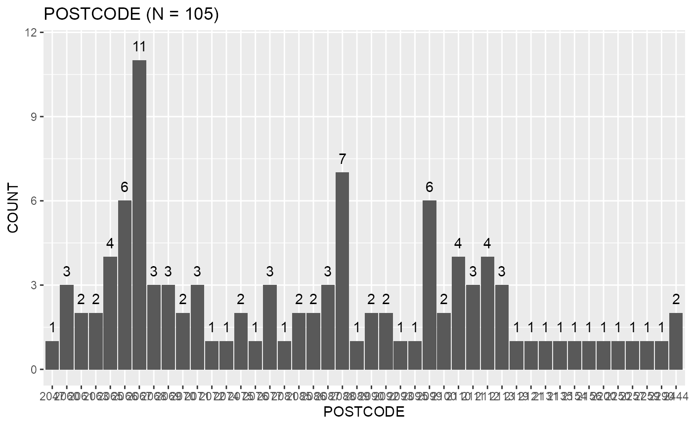
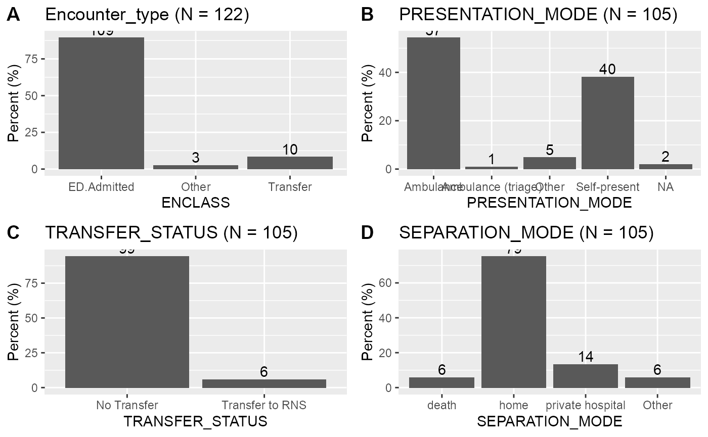

Heart Failure Inpatient Analysis
Harrison Nguyen
25/06/2021
heartfailure_prelim.Rmd
library(magrittr)
library(targets)
library(tidyverse)
library(kableExtra)
library(ggplot2)
library(ggpubr)
library(acs)
source("R/definitions.R")
hf_journey <- targets::tar_read(hf_journey)
hf_journey_demo_prep <- targets::tar_read(hf_journey_demo_prep)
hf_discharge_letter_keys <- targets::tar_read(hf_discharge_letter_keys)
hf_journey_meds_admit_discharge <- targets::tar_read(hf_journey_meds_admit_discharge)
hf_meds_discharge_sum <- targets::tar_read(hf_meds_discharge_sum)Introduction
This document will examine the inpatient journeys of patients who were designated a heart failure related ICD-10 code. For instance, there will be a characterisation of the cohort in terms of their demographics, as well as the proportion that were discharged with specific medications and had undergone specific investigations and/or procedures.
Cohort
The cohort under analysis are patient journeys that were designated the following ICD10 codes as a primary diagnosis:
as.data.frame(hf_icd_codes()) %>%
knitr::kable()| codes | names |
|---|---|
| I50.0 | Heart failure |
| I50.1 | Left venctricular failure, unspecified |
| I50.9 | Heart failure, unspecified |
| U82.2 | Chronic heart failure |
| I11.0 | Hypertensive heart disease with heart failure |
| I13.0 | Hypertensive heart and chronic kidney disease with heart failure and stage 1 through stage 4 chronic kidney disease, or unspecified chronic kidney disease |
| I13.2 | Hypertensive heart and chronic kidney disease with heart failure and with stage 5 chronic kidney disease, or end stage renal disease |
facility_list <- c("Royal North Shore")
cohort_journey_keys <- hf_journey %>%
dplyr::filter(FACILITY %in% facility_list, DIAGNOSIS_IMPORTANCE == "primary_diagnosis") %>%
dplyr::pull(JOURNEY_KEY)
primary_journey <- hf_journey %>%
dplyr::filter(JOURNEY_KEY %in% cohort_journey_keys )
primary_journey_demo <-hf_journey_demo_prep %>%
dplyr::filter(JOURNEY_KEY %in% cohort_journey_keys )
primary_meds <-hf_journey_meds_admit_discharge %>%
dplyr::filter(JOURNEY_KEY %in% cohort_journey_keys )
primary_meds_sum <- hf_meds_discharge_sum %>%
dplyr::filter(JOURNEY_KEY %in% cohort_journey_keys )
n_journeys <- dplyr::n_distinct(primary_journey$JOURNEY_KEY)
n_encounters <- dplyr::n_distinct(primary_journey$ENCNTR_KEY)
n_patients <- dplyr::n_distinct(primary_journey$PERSON_KEY)Furthermore, the cohort selected have an admission date between 2017-04-01 - 2017-06-29 and includes any journeys that includes an encounter at Royal North Shore.
The analysis therefore includes N = 105 unique journeys with 121 encounters for 102 unique patients.
proportion_bar_plot <- function(df,column,title){
df %>%
ggplot2::ggplot(., aes(x=!!rlang::sym(column))) +
ggplot2::geom_bar(aes(y = (..count..)/sum(..count..)*100),stat="count") +
ggplot2::xlab(column) +
ggplot2::ylab("Percent (%)") +
ggtitle(paste0(title, " (N = ",nrow(df), ")")) +
geom_text(
aes(label=..count..,y= (..count..)/sum(..count..)*100),
stat='count',
vjust=-0.25
)
}Demographics
Figure @ref(fig:demo-plot) shows the distribution of ICD10 codes, age and sex.
icd10_plot<- proportion_bar_plot(primary_journey_demo,"DISPLAY_IDENTIFIER_CAP","ICD10 codes")
age_plot<- proportion_bar_plot(primary_journey_demo,"AGE_BINNED","AGE")
sex_plot<- proportion_bar_plot(primary_journey_demo,"GENDER","SEX")
ggpubr::ggarrange(icd10_plot, age_plot, sex_plot,
labels = c("A", "B", "C"),
ncol = 3, nrow = 1)Demographics of journeys.
Figure @ref(fig:code-cat-plot) shows the distribution of ICD10 codes conditioned on age and sex. The plots suggests that older age groups are more likely to be coded as having an ICD10 code of I50.0 Heart failure and are less likely to be coded as I50.1 Left ventricular failure. There seems to be no significant differences in diagnosis between sex.
age_plot<- primary_journey_demo %>%
dplyr::count(AGE_BINNED,DISPLAY_IDENTIFIER_CAP) %>%
dplyr::group_by(AGE_BINNED) %>%
dplyr::mutate(prop = prop.table(n)) %>%
ggplot2::ggplot(., aes(x=AGE_BINNED,y=prop,fill=DISPLAY_IDENTIFIER_CAP)) +
geom_bar(stat="identity",position=position_dodge(0.8),width=0.7) +
scale_y_continuous(labels = scales::percent_format()) +
geom_text(aes(label= n,y=prop),position=position_dodge(0.8),vjust=-0.5) +
labs(y="Percent (%)") +
scale_fill_discrete(name = "ICD10 code")
sex_plot<- primary_journey_demo %>%
dplyr::count(GENDER,DISPLAY_IDENTIFIER_CAP) %>%
dplyr::group_by(GENDER) %>%
dplyr::mutate(prop = prop.table(n)) %>%
ggplot2::ggplot(., aes(x=GENDER,y=prop,fill=DISPLAY_IDENTIFIER_CAP)) +
geom_bar(stat="identity",position=position_dodge(0.8),width=0.7) +
scale_y_continuous(labels = scales::percent_format()) +
geom_text(aes(label= n,y=prop),position=position_dodge(0.8),vjust=-0.5) +
labs(y="Percent (%)") +
scale_fill_discrete(name = "ICD10 code")
ggpubr::ggarrange(age_plot, sex_plot,
labels = c("A", "B"),
ncol = 2, nrow = 1)
Distribution of ICD10 codes conditioned on sex and age.
postcode_plot<- primary_journey_demo %>%
ggplot2::ggplot(., aes(x=CURRENT_POSTCODE)) +
ggplot2::geom_bar() +
ggplot2::xlab("POSTCODE") + ggplot2::ylab("COUNT") + ggtitle(paste0("POSTCODE (N = ",n_journeys, ")")) +
geom_text(
aes(label=..count..),
stat='count',
nudge_y=0.5,
va='bottom'
)
postcode_plot
Journey Characteristics
Figure @ref(fig:journey_char_plot) shows the characteristics of the journeys such as the presentation mode, whether the journey involved a transfer and the separation mode. Those presented as Ambulance Triage are defined as journeys that hadtheir jorueny first facility as Royal North Shore and whether their triage form contained the presence of atami or etami or cath lab.
Most encounters are admitted into ED and most journeys either arrived by ambulance or as a self presentation.
p1<-proportion_bar_plot(primary_journey, "ENCLASS", "Encounter_type")
p2<- proportion_bar_plot(primary_journey_demo, "PRESENTATION_MODE", "PRESENTATION_MODE")
p3<-proportion_bar_plot(primary_journey_demo, "TRANSFER_STATUS", "TRANSFER_STATUS")
p4<-proportion_bar_plot(primary_journey_demo, "SEPARATION_MODE", "SEPARATION_MODE")
ggpubr::ggarrange(p1, p2, p3,p4,
labels = c("A", "B", "C","D"),
ncol = 2, nrow = 2)
Discharge Medications
Discharge medications were defined as journeys that had a discharge letter and excluded journeys that had a separation mode of either death, dama, private hospital.
hf_discharge_journeys <- primary_journey %>%
dplyr::filter(ENCNTR_KEY %in% hf_discharge_letter_keys)
n_journeys_w_discharge <- dplyr::n_distinct(hf_discharge_journeys$JOURNEY_KEY)
## need to consider eplerenone
## https://www.ncbi.nlm.nih.gov/pmc/articles/PMC4814010/93.3% (98/105) had a discharge letter and of those,83.7% (82/98) remained after the exclusion criteria.
ace<- hf_journey_meds_admit_discharge %>%
dplyr::filter(MEDICATION == "A2RB/ACE Inhibitor") %>%
dplyr::distinct(MEDICATION_NAME)
beta<- hf_journey_meds_admit_discharge %>%
dplyr::filter(MEDICATION == "Beta blocker") %>%
dplyr::distinct(MEDICATION_NAME)
diuretic<- hf_journey_meds_admit_discharge %>%
dplyr::filter(MEDICATION == "Other diuretic") %>%
dplyr::distinct(MEDICATION_NAME)The medications examined include:
- ACE inhibitors such as candesartan, perindopril, irbesartan,
- beta blockers such as propranolol, metoprolol, sotalol and
- diuretics such as spironolactone, hydrochlorothiazide, eplerenone.
Figure @ref(fig:meds-plot) shows the proportion of journeys that were discharged with the relevant medication.
primary_meds_sum %>%
gather(medication, val, `Other diuretic`:`Beta blocker`) %>%
mutate(val = val > 0) %>%
group_by(medication) %>%
summarise(percent = sum(val)/n()*100,n = sum(val), .groups = "drop") %>%
mutate(medication = fct_reorder(medication, percent)) %>%
ggplot2::ggplot(., aes(x=medication,y=percent))+
ggplot2::geom_bar(stat="identity") +
geom_text(
aes(label=n),
nudge_y=1.5,
va='bottom'
) +
labs(x="Medication",y="Percent (%)",
title = paste0("Medication (N = ", nrow(primary_meds_sum), ")"))Proportion of journeys with discharge medication.
Discharge Diagnosis and ICD10 Diagnosis Concordance
hf_snomed_encounters <- targets::tar_read(hf_snomed_encounters)
hf_icd10_encounters <- targets::tar_read(hf_icd10_encounters)
fac_snomed_encounter <- hf_snomed_encounters %>%
dplyr::filter(FACILITY %in% facility_list)
fac_icd10_encounter <- hf_icd10_encounters %>%
dplyr::filter(FACILITY %in% facility_list)We examine encounters with either a ICD10 or discharge (SNOMED) diagnosis of heart failure over the same period of time and facilities. This results in 103 ICD10 encounter and 38 SNOMED encounters with the following list of SNOMED codes:
| value |
|---|
| ACUTE EXACERBATION OF CHRONIC CONGESTIVE HEART FAILURE |
| BIVENTRICULAR FAILURE |
| CHRONIC LEFT-SIDED CONGESTIVE HEART FAILURE |
| CONGESTIVE HEART FAILURE |
| HEART FAILURE |
| CHF - CONGESTIVE HEART FAILURE |
| ACUTE HEART FAILURE |
| EXACERBATION OF CONGESTIVE HEART FAILURE |
| HF - HEART FAILURE |
| LEFT VENTRICULAR FAILURE |
| RIGHT HEART FAILURE DUE TO PULMONARY DISEASE |
| HEART FAILURE WITH NORMAL EJECTION FRACTION |
| HEART FAILURE WITH REDUCED EJECTION FRACTION |
| ACUTE CONGESTIVE HEART FAILURE |
comb_encounters<-fac_icd10_encounter %>%
dplyr::select(ENCNTR_KEY, SOURCE_STRING_CAP) %>%
dplyr::full_join(
dplyr::select(fac_snomed_encounter,ENCNTR_KEY,SOURCE_STRING_CAP),
by="ENCNTR_KEY",
suffix=c("_ICD10","_SNOMED")
) %>%
dplyr::mutate(HAS_ICD10 = !is.na(SOURCE_STRING_CAP_ICD10),
HAS_SNOMED = !is.na(SOURCE_STRING_CAP_SNOMED))
snomed_icd10<- table(comb_encounters$HAS_ICD10,comb_encounters$HAS_SNOMED)
prop_snomed_icd10<- prop.table(table(comb_encounters$HAS_ICD10,comb_encounters$HAS_SNOMED)) Taking the union of the two types of diagnosis codes together, there are 121 unique encounters.
Table @ref(tab:icd10-tab) shows a contingency table between discharge diagnosis and ICD10 codes where only 16.5% have both an ICD10 and SNOMED heart failure code.
snomed_icd10 %>%
knitr::kable(digits=2,caption = "Contigency table of discharge diagnosis and ICD10 code.") %>%
kableExtra::add_header_above(c("HAS_ICD10"=1,"HAS_SNOMED"=2))| FALSE | TRUE | |
|---|---|---|
| FALSE | 0 | 18 |
| TRUE | 83 | 20 |
prop_snomed_icd10 %>%
knitr::kable(digits=2, caption = "Contigency table of discharge diagnosis and ICD10 code as percentage.") %>%
kableExtra::add_header_above(c("HAS_ICD10"=1,"HAS_SNOMED"=2))| FALSE | TRUE | |
|---|---|---|
| FALSE | 0.00 | 0.15 |
| TRUE | 0.69 | 0.17 |
Secondary Diagnosis
The above results focused on those with a primary ICD10 heart failure diagnosis. The next section examines those with a secondary or additional ICD10 diagnosis.
cohort_journey_keys <- hf_journey %>%
dplyr::filter(FACILITY %in% facility_list, DIAGNOSIS_IMPORTANCE == "secondary_diagnosis") %>%
dplyr::pull(JOURNEY_KEY)
secondary_journey_demo <- hf_journey_demo_prep %>%
dplyr::filter(JOURNEY_KEY %in% cohort_journey_keys )
icd10_plot<- proportion_bar_plot(secondary_journey_demo,"DISPLAY_IDENTIFIER_CAP","Additional Diagnosis")
icd10_plot The cohort for a secondary diagnosis of heart failure is larger (N = 419) than those diagnosed with a primary diagnosis (N = 105) and also includes encounters coded with
The cohort for a secondary diagnosis of heart failure is larger (N = 419) than those diagnosed with a primary diagnosis (N = 105) and also includes encounters coded with chronic heart failure.